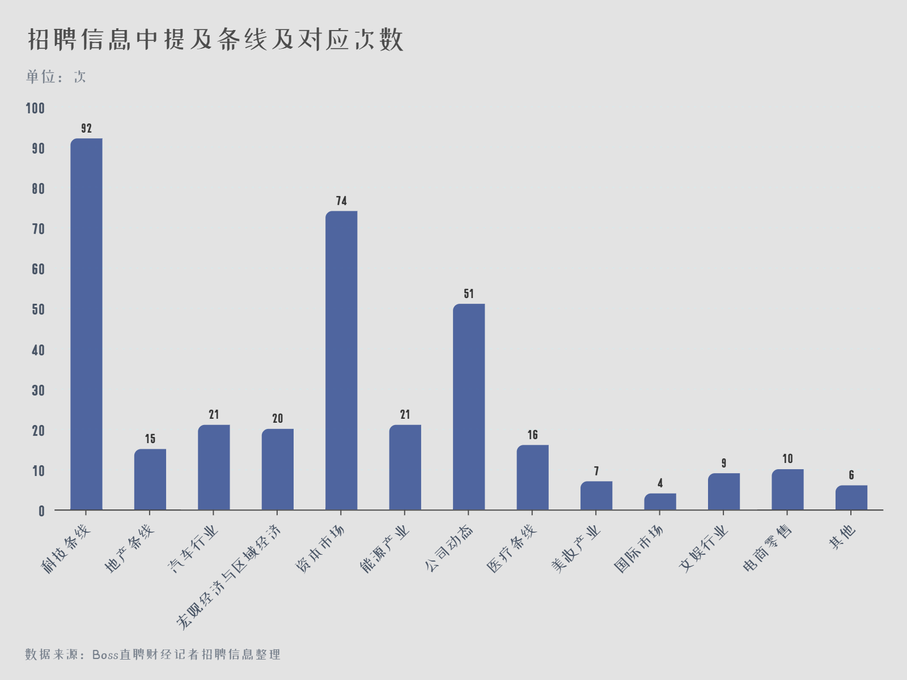
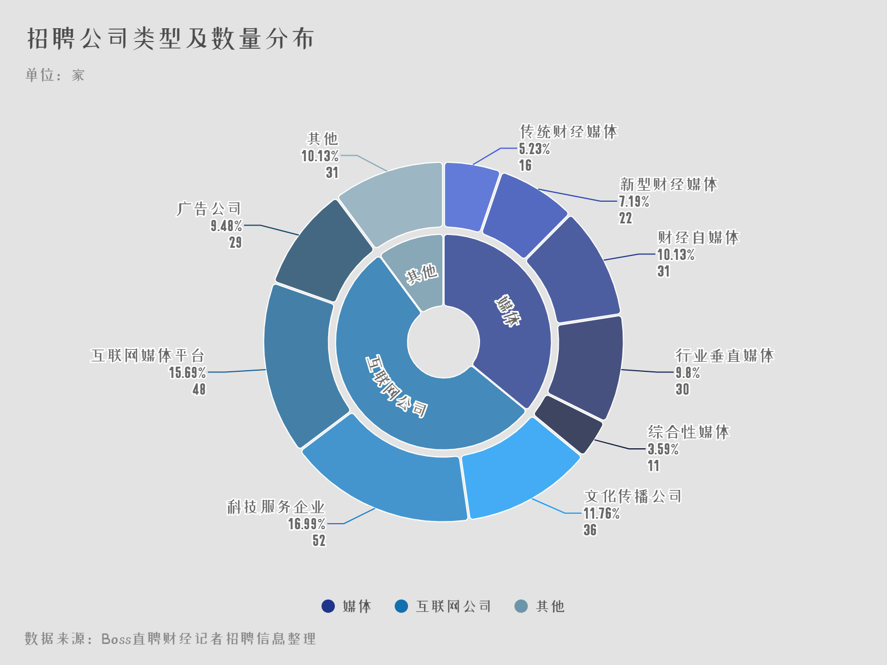
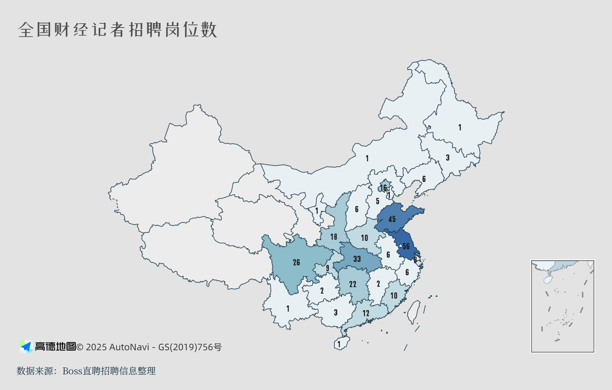
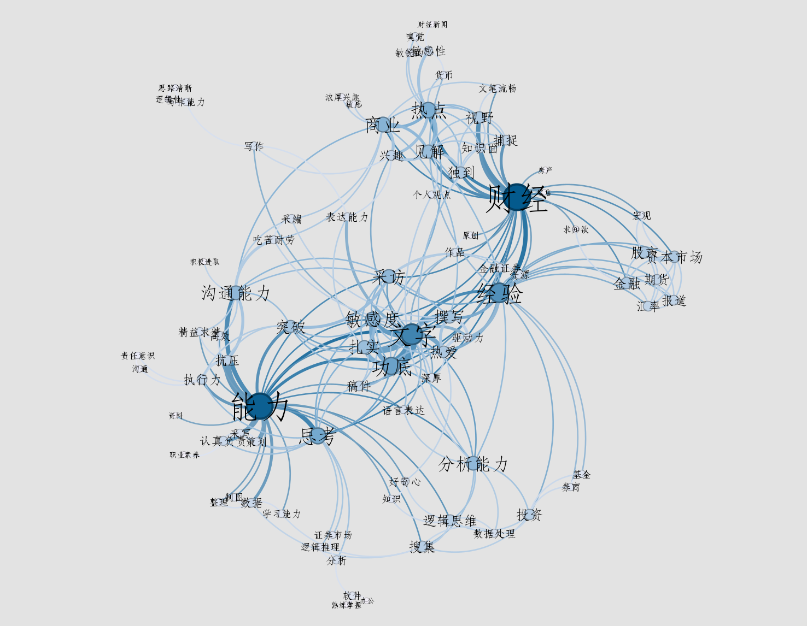
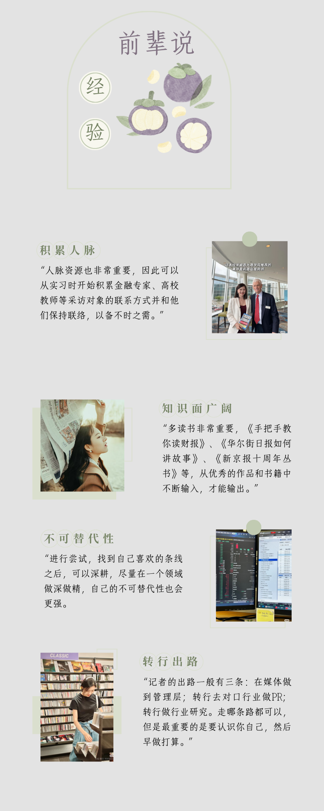

我国正处于经济持续发展、社会深刻转型的时期。一方面各种重要经济活动频繁，各类经济事件高发；另一方面，这类经济活动或经济事件通常还伴随着人们对国家政治体制、宏观经济政策和金融调控措施、环境保护、食品安全等诸多议题的关注和探讨。因此，市场需要财经媒体满足大众即时洞悉国家经济政策的需求。
20世纪90年代初，随着我国证券市场的开启，三大证券报，即上海证券报、中国证券报和证券时报先后创刊。
随后，中国经营报、21世纪经济报道、经济观察报、《财经》等一批新财经类报刊问世，以及从中央电视台到各地方电视台、广播台财经类频道和栏目的纷纷建立。20年间，我国的财经报道立体格局逐渐成形，成为世界解读中国经济发展、民众了解和判断相关行业和企业状况的重要途径。
作为财经新闻的生产者，财经记者在财经媒体中发挥着重要作用。早在1912年，《华尔街日报》当时的掌舵者克洛伦斯·巴尤就这样对年轻编辑记者说："你们不是一般报纸的记者，我们的读者是依据你们的报道而做（投资）决定的。因此你有责任访问任何人，每一个该访问的人"。
对于有志于成为财经记者但是却长期待在象牙塔里的大学生来说，如何才能在当下竞争激烈的人才市场中脱颖而出，斩获 offer 呢？
为了回答这个问题，笔者借助 Python 编写爬虫代码，爬取 Boss 直聘网站中关于财经记者的招聘信息。Boss 直聘的网页有反爬策略，如动态加载、验证码等，因此笔者使用 Selenium 工具，使得爬虫能够模拟人类的操作行为，从而实现更高效、精准的数据爬取。最终获取到关于财经记者的 300 条招聘信息，具体含有标题、薪资、公司名称、公司信息、经验要求、公司标签以及公司福利。
成为财经记者的第一步是了解何为财经记者。
财经记者是指负责财经新闻的采写、编辑和发布，包括对财经事件的报道、深度分析文章的撰写等的媒体从业人员。他们由处于不同生态位的群落组成的，其关注的领域细分，以及报道的方式（如以硬新闻为主还是以深度分析见长），相互之间差别较大。

如图，通过对招聘信息中提及的条线和对应次数进行整理，可以发现不同的财经记者会关注不同的条线，例如科技、地产、资本市场、医疗、宏观经济与区域经济等。
其中被提及次数排名前三的是科技（92次）、资本市场（74次）和公司动态（51次）。资本市场的报道主要关注银行、证券、保险、信托、外汇、税务、理财、私人银行、移民以及海外置业等方面；公司动态主要关注 A 股，中概股，港股上市公司的动态、公告以及财报分析；科技条线主要报道人工智能等前沿科技的最新进展……这三类领域人才需求较大也与时代发展密切相关，例如近几年人工智能等技术的快速发展，大众对于科技前沿信息的需求度增加，科技条线的记者需求也随之增多。
那财经记者可以在哪些单位工作呢？

如图，对招聘信息中的招聘单位的类型进行整理，可以看到各类媒体、互联网公司以及包括经济咨询和研究机构在内的其他机构都会招聘财经记者。
其实，不仅是大众普遍印象中包括证券时报、21世纪经济报道等在内的传统媒体需要财经记者，随着时代的发展，财经记者也可以在互联网公司和一些经济研究机构工作。例如华夏能源网聚焦光伏、风电、油气、电力储能、氢能等前景广阔的低碳能源产业，因此会招聘能源领域的记者；中国化妆品行业自媒体公司品观科技招聘美妆产业的财经记者；美泰科技、意创天下、微智互联、金捷集等众多科技公司会招聘财经记者从事企业的科技宣传工作。
当然，"不谈待遇的工作就是耍流氓"，财经记者的薪资待遇肯定是广大求职者非常关心的问题。
如图，将待遇信息统计词频，并绘制成词云图，由图可知，五险一金（218次）、年终奖（189次）、节日福利（155次）、员工旅游（118次）、定期体检（101次）和旅游（118次）是绝大多数公司提供的待遇。除此之外，团建以及零食下午茶等也被广泛提及，作为公司吸引人才的手段。
在薪资方面，财经记者的薪资在 3k/月-30k/月不等，由基本工资和稿费共同构成，多劳者多得，也因此一般经验越丰富工资越高。
影响收入的除了个人能力之外，跟所在地的城市发达程度，不同的单位属性都有很大关系。对招聘信息进行归纳，笔者发现传统的财经媒体例如每日经济新闻、21世纪经济报道会确保 6000 左右的底薪，但是上限一般也不超过 15000；但是一些诸如"程前朋友圈"等名气不高的新媒体公司为了吸引人才，会给出 1.5w 的底薪，上限达到 3w。当然小公司的成长空间和繁忙程度也是需要求职者衡量的一个重要因素。
网上段子常说，财经记者就是每个月拿着 8000 块的工资，和一帮一个月拿数十万的老总们高屋建瓴谈产业规划的人群。平均而言，这句话其实也没说错！
了解了财经记者的薪资待遇和基本职责之后，我们不禁想问：财经记者的任职条件是什么？市场究竟需要怎样的人才？对于长期待在象牙塔中顾及学业，实践空间相对有限的大学生而言，想要回答这个问题，招聘网站可以说是定位市场需求以做好职业规划的不二之选。
首先，什么学历可以做财经记者？人才市场又偏爱什么专业的学生？
如图，对 Boss 直聘中的信息进行整理，可以看到大专及以上是最基础的，其中，94% 的岗位要求本科及以上，有 8% 的岗位明确要求硕士学位。
专业方面，各大岗位并没有非常明确的专业限制，但是 211、985 的金融、新闻、中文、汉语言被广泛提及，更加具有竞争力。部分行业公司还会倾向于与自己所属领域相关的专业，例如互联网企业光伏人在招聘要求中写道"能源相关专业优先"。综上，在经验差不多的情况下，笔者总结出拥有财经背景的人文社科硕士最具有竞争力。
其次，众所周知，地域也是求职者会考虑的重要因素。那财经记者岗位的地域分布情况如何？去什么城市更容易找到工作？

可以看到，江苏省的财经记者岗位最多，达到 56 个；其次是山东省（45个）、湖北省（33个）。北京市（16个）和上海市（8个）数量反倒相对少一些。
虽然北京和上海的媒体资源更加丰富，但是人才供给多，岗位也更容易变得饱和。反而是一些产业结构和经济迅速发展的大省，人才供给相对较少，因此岗位需求也多。例如山东是民营经济大省，产业结构也很丰富，既有传统的制造业如青岛的家电制造业、济南的汽车制造业等，又有新兴产业如人工智能、元宇宙等。这为财经记者提供了广泛的报道领域，从传统产业的转型升级到新兴产业的发展动态，都需要专业的财经记者进行深入报道。因此，如果觉得北京上海的压力太大、生活成本太高，但是又想干财经记者的话，一些经济快速发展的大省也是非常不错的选择。
谈论至此，最重要的是，一名优秀的财经记者到底需要具备什么样的技能呢？答案是要"软硬兼施"。

将各个职位的任职要求整理成文本，利用 Python 分词得到热词，并构建词与词之间的共现矩阵，导入 Gephi 渲染得到共线网络。
可以看到"财经"、"文字"、"能力"三个节点的面积较大，在网络中占据核心地位。词汇之间的连线表示它们在某个语境下经常一起出现，或者在某个主题下有较强的关联性。并且围绕着这三个节点，词汇之间形成了 3 个明显的聚类。
上述表明文字写作功底、财经分析素养和沟通合作等能力是市场对于财经记者的核心要求。
第一，硬技能是基础。硬技能分为过硬的新闻采写能力和优秀的财经分析能力。相较于其他新闻类型，财经新闻涉及经济知识，这要求记者具备扎实的金融素养，如国际贸易、外汇市场、基金、银行金融、保险、债券等方面的知识。对所报道的特定行业或领域，如 TMT、上市公司、贸易金融等，也要有深入的了解和研究。而掌握了经济知识后，如何写出既有专业深度又兼具可读性的新闻稿，则需要记者有优秀的文字功底，从而生动准确地传达出财经信息。
第二，软技能是关键。合作能力、抗压能力、沟通能力等软技能较为隐形，但是不可或缺。因为记者需要和采访者、编辑保持良好沟通，有时候操作重大选题更需要团队合作，遇到采访被拒绝、稿件难以刊发等困难时也要能够扛得住压力。这些软技能很大程度上决定了出稿的速度和质量，因此 HR 看中也无可厚非。
财经记者前辈们过来人的经验也可以给新人一些启发，笔者总结了小红书中一些财经记者的帖子，一起来看看吧~
